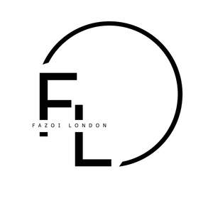

Trade Mark Journal No.2025/050 12 December 2025
UK00004304029 2 December 2025 (18,25)

- Class 18
- Bags for clothes; Clothes for animals; Handbags; Handbags, purses and wallets; Clutch purses [handbags]; Leather handbags; Fashion handbags; Pocketbooks [handbags]; Handbags for ladies; Ladies handbags; Straps for handbags; Clutch handbags; Handbags for men; Purse frames [handbags]; Purses [leatherware]; Purses; Handbags made of leather; Slouch handbags; Leather purses; Evening handbags; Gentlemen's handbags; Handbags made of imitations leather; Purses, not of precious metal [handbags]; Cosmetic purses; Ladies' handbags; Gent's handbags; Clutches [purses]; Leather bags and wallets; Purses, not made of precious metal [handbags]; Clutch purses; Briefcases [leatherware]; Handbag straps; Leather bags; Leather coin purses; Imitation leather bags; Travelling bags [leatherware]; Leather shopping bags; Crossbody bags; Tote bags; Cross-body bags; Multi-purpose purses; Bags; Briefcases [leather goods]; Shoe bags; Luggage tags [leatherware]; Toiletry bags; Cosmetic bags; Bags for sports clothing; Evening purses; Bags for umbrellas; Luggage, bags, wallets and other carriers; Card wallets [leatherware]; Bags made of imitation leather; Leather wallets; Leather for shoes; Travelling bags made of imitation leather; Coin purses; Straps for coin purses; Leather briefcases; Shoe bags for travel; Change purses; Bags made of leather; Luggage bags; Leather suitcases; Duffle bags; Small purses; Make-up bags; Makeup bags; Small clutch purses; Canvas bags; Canvas shopping bags; Garment bags for travel made of leather; Carry-all bags; Handbags, not of precious metal; Frames for coin purses [structural parts of coin purses]; Clutch bags; Textile shopping bags; Carryalls; Bags (Game -) [hunting accessories]; Game bags [hunting accessories]; Carry-on bags; Duffel bags; Travelling bags made of leather; Athletics bags; Knitted bags; Satchels; Belt bags and hip bags; Grocery tote bags; Billfolds; Garment bags; Chain mesh purses; Athletic bags; Backpacks; Flexible bags for garments; Duffel bags for travel; Knitting bags; Pochettes; Leather luggage tags; Travel bags; Bags for travel; Garment bags for travel; Bags (Garment -) for travel.
- Class 25
- Clothes; Clothing; Baby clothes; Denims [clothing]; Jackets [clothing]; Work clothes; Shorts [clothing]; Aprons [clothing]; Drawers [clothing]; Drawers as clothing; Clothes for sports; Jackets (Stuff -) [clothing]; Stuff jackets [clothing]; Clothes for sport; Linen clothing; Headbands [clothing]; Headbands for clothing; Kerchiefs [clothing]; Bottoms [clothing]; Gloves [clothing]; Gloves as clothing; Capes (clothing); Furs [clothing]; Trunks being clothing; Maternity clothing; Babies' pants [clothing]; Clothing layettes; Jerseys [clothing]; Layettes [clothing]; Hoods [clothing]; Clothing for leisure wear; Gabardines [clothing]; Oilskins [clothing]; Woolen clothing; Clothing for babies; Ready-to-wear clothing; Bodies [clothing]; Garments for protecting clothing; Tops [clothing]; Gussets for underwear [parts of clothing]; Belts [clothing]; Belts for clothing; Playsuits [clothing]; Collars [clothing]; Pockets for clothing; Veils [clothing]; Knitwear [clothing]; Paper hats for use as clothing items; Corsets [clothing, foundation garments]; Silk clothing; Fabric belts [clothing]; Mitts [clothing]; Hats (Paper -) [clothing]; Paper hats [clothing]; Braces for clothing; Beach clothing; Belts (Money -) [clothing]; Money belts [clothing]; Chaps (clothing); Ready-made clothing; Gussets for bathing suits [parts of clothing]; Embroidered clothing; Casual clothing; Visors [clothing]; Knitted clothing; Footwear; Sneakers [footwear]; Footwear [excluding orthopedic footwear]; Footwear soles; Soles for footwear; Flip-flops for use as footwear; Wooden shoes [footwear]; Athletic footwear; Footwear uppers; Uppers (Footwear -); Footwear for snowboarding; Footwear for sports; Sports footwear; Footwear for sport; Footwear for use in sport; Trainers [footwear]; Footwear for women; Casual footwear; Footwear for men; Pumps [footwear]; Athletics footwear; Leisure footwear; Climbing footwear; Rubbers [footwear]; Golf footwear; Fishing footwear; Beach footwear; Heelpieces for footwear; Insoles [for shoes and boots]; Insoles for shoes and boots; Parts of clothing, footwear and headgear; Shoes; Tips for footwear; Footwear (Tips for -); Children's footwear; Welts for footwear; Footwear (Welts for -); Shoes for leisurewear; Inner socks for footwear; Mountaineering shoes; Non-slipping devices for footwear; Footwear (Non-slipping devices for -); Shoe soles; Infants' footwear; Footwear not for sports; Ladies' footwear; Slip-on shoes; Sneakers; High-heeled shoes; Snowboard shoes; Sports shoes; Sport shoes; Leather shoes; Esparto shoes or sandals; Athletic shoes; Fittings of metal for footwear; Footwear (Fittings of metal for -); Waterproof shoes; Hiking shoes; Apres-ski shoes; Traction attachments for footwear; Leisure shoes; Shoes soles for repair; Footwear for men and women; Esparto shoes or sandles; Shoe soles for repair; Fittings of metal for boots and shoes; Footwear made of vinyl; Sandals and beach shoes; Skiing shoes; Cycling shoes; Tongues for shoes and boots; Athletics shoes; Rubber shoes; Footwear made of wood; Tennis shoes; Soccer shoes; Sportswear; Pullstraps for shoes and boots; Shoe uppers; Gymnastic shoes; Basketball shoes; Yoga shoes; Hockey shoes; Boots for sports; Shoes for casual wear; Jogging shoes; Rugby shoes; Handball shoes; Headwear; Visors [headwear]; Visors being headwear; Bonnets [headwear]; Caps [headwear]; Caps being headwear; Leather headwear; Peaked headwear; Sun visors [headwear]; Children's headwear; Headgear; Beanie hats; Fascinator hats; Sports headgear [other than helmets]; Fashion hats; Hats; Party hats [clothing]; Sports caps and hats; Beanies; Thermal headgear; Visors [hatmaking]; Gloves for apparel; Bobble hats; Toques [hats]; Headdresses [veils]; Neckwear; Caps with visors; Sun hats; Sports clothing [other than golf gloves]; Clothing for sports; Sports clothing; Outerwear; Wristbands [clothing]; Golf clothing, other than gloves; Fingerless gloves as clothing; Headbands; Mufflers [clothing]; Men's clothing; Woolly hats; Clothing for wear in wrestling games; Ushankas [fur hats]; Mitres [hats].
Fazoi London Ltd